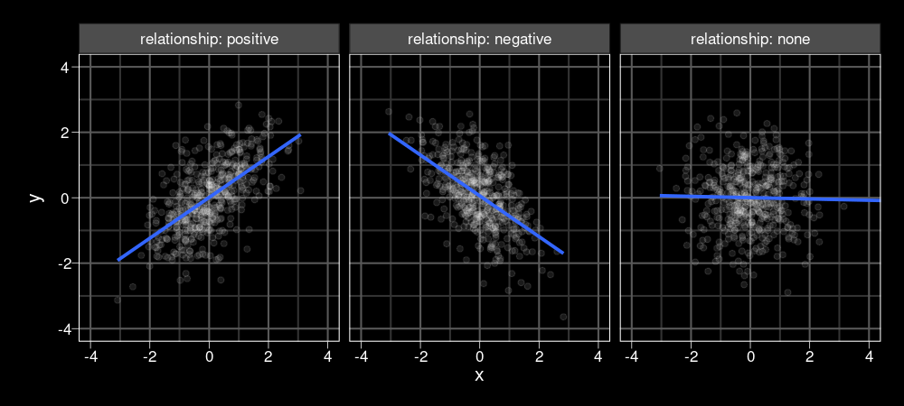
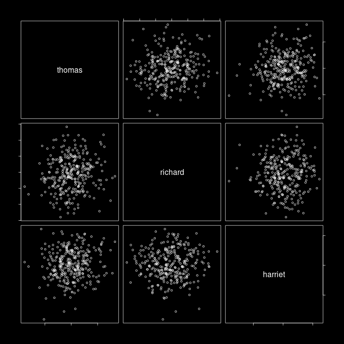
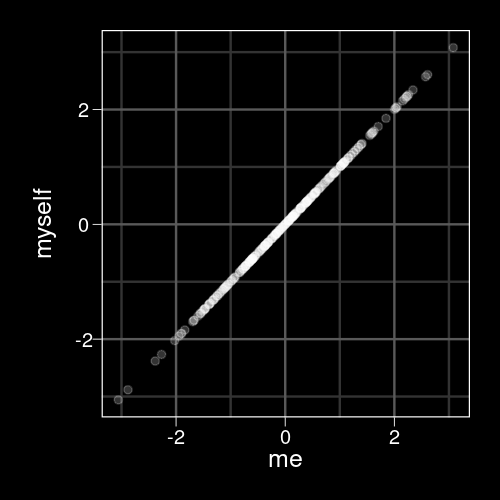
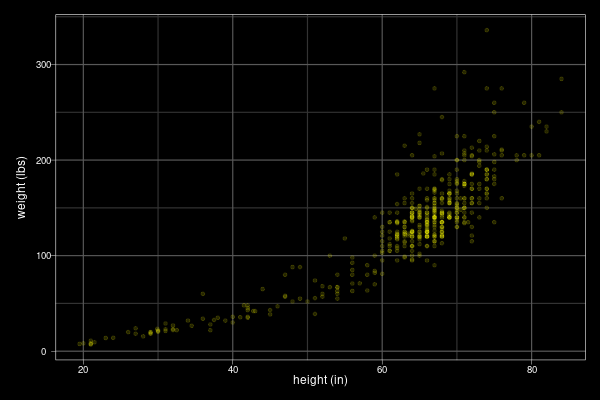
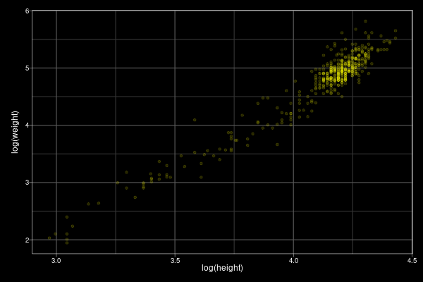
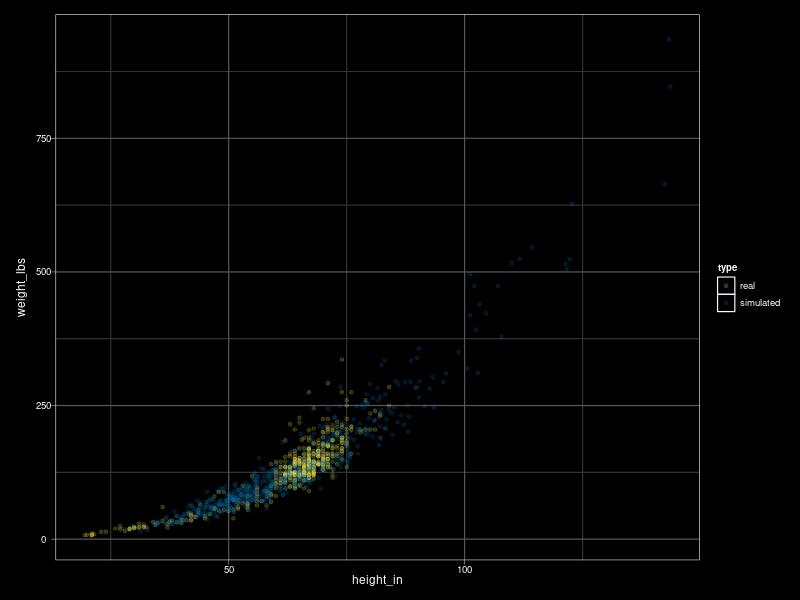

Created: 2021-04-07 Wed 22:38



Typicaly denoted as \(\rho\) (Greek symbol ’rho’) or \(r\)
\(-1 \ge r \le 1\)
\(r^2\): coefficient of determination (shared variance)
Estimated using Pearson or Spearman (rank) method.
In R: cor(), cor.test()
For \(n\) variables, you have
\[\frac{n!}{2(n - 2)!}\]
unique pairwise relationships, where \(n!\) is the factorial of \(n\).
In R: choose(n, 2).
| IQ | verbal fluency | digit span | |
|---|---|---|---|
| IQ | 1.00 | 0.56 | 0.43 |
| verbal fluency | 0.56 | 1.00 | -0.23 |
| digit span | 0.43 | -0.23 | 1.00 |
In R: corrr::correlate()
| IQ | verbal fluency | digit span | |
|---|---|---|---|
| IQ | |||
| verbal fluency | 0.56 | ||
| digit span | 0.43 | -0.23 |
cor()
cor.test()
corrr::correlation()
To simulate bivariate (or multivariate) data in R, use MASS::mvrnorm().
mvrnorm(n, mu, Sigma, ...)
You need the following information:
bivariate appa measure of how much some quantity varies
“standard deviation of x”: \(\sigma_x\)
“variance of x”: \({\sigma_x}^2\)
\( \hat{\sigma}_x = \sqrt{\frac{\Sigma\left(X - \hat{\mu}_x\right)^2}{N - 1}} \)
height and weight measurements for 435 people, taken from here


| \(\hat{\mu}_x\) | 4.11 |
| \(\hat{\mu}_y\) | 4.74 |
| \(\hat{\sigma}_x\) | .26 |
| \(\hat{\sigma}_y\) | .65 |
| \(\hat{\rho}_{xy}\) | .96 |
\(\mathbf{\Sigma}\)
A square matrix that characterizes the variances and their interrelationships (covariances).
Must be symmetric and positive definite
| \(\sigma_{x}\) | .26 |
| \(\sigma_{y}\) | .65 |
| \(\rho_{xy}\) | .96 |
MASS::mvrnorm()my_cov <- .96 * .26 * .65 my_Sigma <- matrix(c(.26^2, my_cov, my_cov, .65^2), ncol = 2) my_Sigma
[,1] [,2]
[1,] 0.06760 0.16224
[2,] 0.16224 0.42250
set.seed(62) ## DON'T put library(MASS) ## in your script! newpeeps <- MASS::mvrnorm(6, mu = c(height = 4.11, weight = 4.74), Sigma = my_Sigma) newpeeps
height weight
[1,] 4.254209 5.282913
[2,] 4.257828 4.895222
[3,] 3.722376 3.759767
[4,] 4.191287 4.764229
[5,] 4.739967 6.185191
[6,] 4.058105 4.806485
The exp() function is the inverse of log().
exp(newpeeps)
height weight
[1,] 70.40108 196.94276
[2,] 70.65632 133.64963
[3,] 41.36254 42.93844
[4,] 66.10779 117.24065
[5,] 114.43045 485.50576
[6,] 57.86453 122.30092
